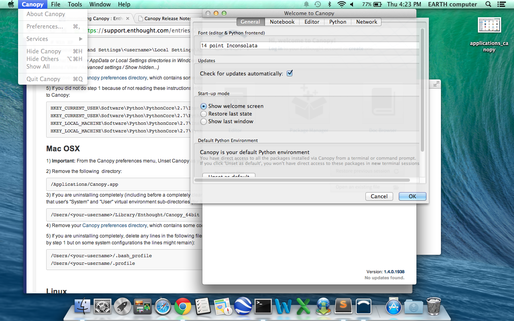
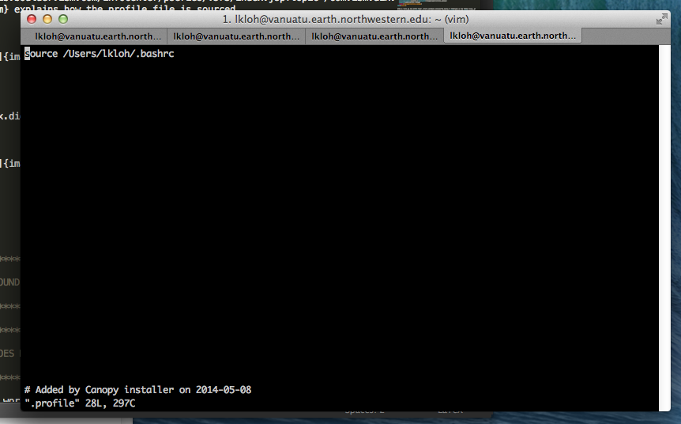
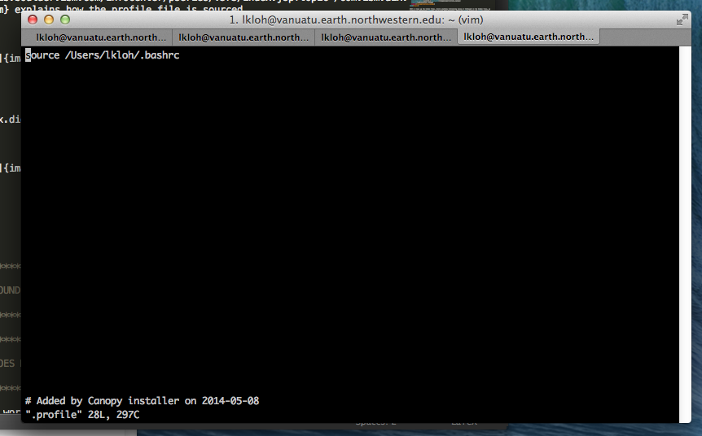

Installing Dependencies¶
Getting your operating system¶
You may need to know .. image:: installing-images/system_preferences.png
Installing Python¶
Shaowei Lin suggested Enthought Canopy to install all the Python packages easily. If you download the free version of Enthought Canopy, it gives you everything you need for installing AIMBAT properly. If you do not want to use Enthought Canopy, read the rest of this section to use Macports or Pip.
Python Dependencies¶
- Numpy
- Scipy
- Matplotlib
- iPython (optional)
Possible Issues¶
Here some common problems and possible resolutions. If your problem is not listed here, or you have a suggestion, please contact the authors.
Macport¶
You may run into problems with AIMBAT if your Macport version is not compatible with your operating system version. For example, if you used Macports for OS X 10.8 to install AIMBAT, then upgraded your operating system or OS X 10.9, you may find that AIMBAT no longer works properly. You will need to upgrade Macports to fix this error.
Do not uninstall MacPorts unless you know what you are doing, uninstalling MacPorts may get rid of other programs you installed using MacPorts. However, if you are sure you want to do so, see here for instructions.
Installing Python with Pip¶
Be careful with the operating system. For OS X 10.9 and above, Python 2.7 is not fully compatible and there may be problems installing python with Pip. Best to use Enthought Canopy or Python 3 with OS X 10.9.
Setting the Python Path to the scripts¶
You are asked to add the path to the AIMBAT scripts in your file. To do that, you add them to the .bashrc file. There are other files you could add it to that work as well, such as the .profile or .bash_profile files. You can see the files by opening the terminal and doing ls -a to see all the hidden files, and open then by doing vi .bashrc in vim, for instance. To ensure you can open a script, you need to add:
export PATH=$PATH:<path-to-folder-with-scripts>
export PYTHONPATH=$PYTHONPATH:<path-to-folder-with-scripts>
to the .bashrc file. We recommend adding the paths to the .bashrc file.
Terminal Commands stop working¶
If ever the terminal commands such as ls stop working in the terminal, it could be that something went wrong with a path in the .bashrc or .profile files. If that happens you may not be able to open them in vim as that command would have stopped working as well. Instead, in the terminal, you do:
PATH=/bin:${PATH}
PATH=/usr/bin:${PATH}
And that should allow the commands to start working again. Figure out what you did wrong and remove that command.
Installing Enthought Canopy¶
Occasionally, Enthought Canopy may not open the default setup environment after you downloaded and tried to install it. If this happens, open the Canopy package, go to “Preferences”, and select Canopy as your default environment.
Uninstalling Enthought Canopy¶
The official Enthought gives suggestions on uninstalling here.
STEPS:
- From the Canopy preferences menu, unset Canopy as your default Python.
- For each Canopy user, delete the following directory which contains that user’s “System” and “User” virtual environment subdirections.
- Delete Canopy from the Applications folder.
- Clean up the hidden files. Delete anything referencing Canopy or Enthought in the hidden files, as evidence by referencing ls -a in your home directory. Check the .bashrc and .profile directories first. If Enthought is not completely gone, this happens if you call Python.
- (Optional). Keep doing which python and cleaning the python files that show up, until which python gives you nothing when you type it in the terminal.

Path to python files not found¶
After adding the path to your directory with scripts in .bashrc, you still need to source the .bashrc files in .profile, or the system may not find the directory. See here for more details to see how the profile file is sourced. Note that this one will override the file in /etc/profile.


This explanation explains how the bashrc file is sourced.

This is what the bashrc and profile files should look like on your home directory:
 
